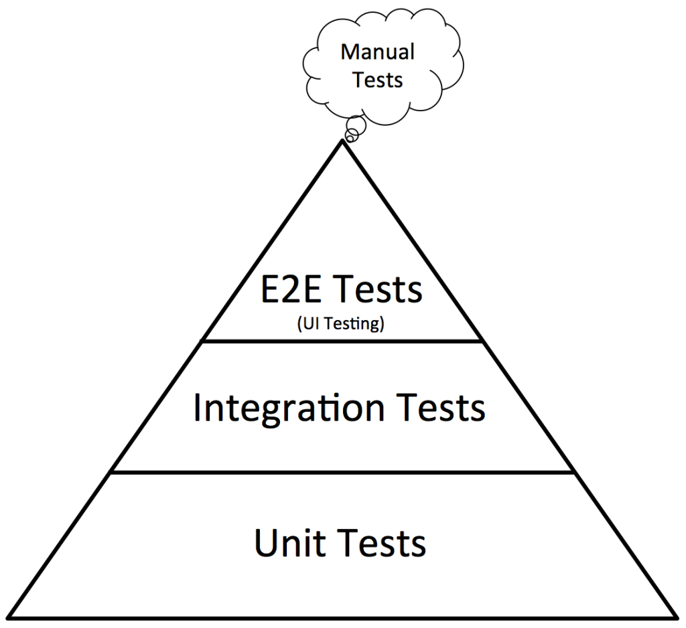

Testing

- Testing Pyramid: https://bit.ly/3dX0fap
- Many unit tests (which are fast and cheap)
- Fewer integration tests
- Even fewer end-to-end tests
- Unit tests thoroughly test logic and the basic operation of all your components.
- Tend to be “cheap”: Can be written and executed quickly.
- Dependencies often mocked (so as to test only the unit in question)
- Integration tests verify that the components integrate correctly.
- Passing tests with mocks is not helpful if the mocks are set up incorrectly.
- Suppose you write a unit test that passes a parameter “toyz” instead of “Toys” and also
configure the mock to look for the parameter “toyz”. Your unit test will pass but still have a bug.
- This is one reason why you write tests before you write code (so you don’t copy the bugs in your code over into the tests).
- This is also one reason why you watch your tests fail.
- End-to-end tests are the ultimate extension of integration tests: Watch everything all work together.
- Tend to be “expensive”:
- Complex to set up (e.g., database needs to be in a certain state)
- Often slow to run
- Need many fewer.
- In theory, you don’t need to provide every possible input to the end-to-end tests. Differences in logic / algorithms handled by unit tests. You just need to test the different workflows / integrations.
- Tend to be “expensive”:
Linting
- Checks for
- style
- patterns that are likely to be errors.
- To install ESLint
npm install eslint --save-devnpx eslint --init- (creates
.eslintrc.jsonYou can customize to fit your own rules/style)
- (creates
- Two helpful additions:
- add
"react/prop-types": 0torules - add
"jest": truetoenv
- add
- Notice that VSCode picks up on this and underlines problems.
- You can also run
npx eslint srcfrom the command line- Show errors in
App.js
- Show errors in
- Running
npm install eslint-plugin-react-hooks --save-devwill allow ESLint to find common mistakes in hook usage.- Book mentions other useful plug-ins.
Testing React
- Notice that when testing an MVC triad in JS, there is often no
unit tests for the view. This is because the
documentobject doesn’t exist outside of a web browser, and is hard to mock. (The DOM objects it uses are quite complicated.) - Testing React is challenging because it blends the model and view.
- High-level approach to unit testing React:
- Render a component in a test environment, and
- Examine the rendered component.
- React recommends using Jest.
- Node does not automatically have the DOM API available.
- Jest includes an npm package called
jsdomfor this purpose.
- Jest includes an npm package called
- The React Testing Library provides useful helpers that extend
jsdomamong other things. - React encourages tests to be structured around how the user interacts with the component rather
than the “implementation” of the component.
- In other words, they argue it is better to look for visible features (e.g., text) than classes.
- (However, if a component can be conditionally rendered, it’s not clear to me that looking for text is the best way to verify the conditional.)
- Look at
Color.test.js- First example finds element with
.colorbox. (See caveat above) - Second example looks for expected text to be visible.
- Third example tests the callback.
- First example finds element with
- I’m not sure how you would unit test the code in the callback.
- My first thought is to move as much “complex” code as possible to a separate class so it can be unit tested separately.
- Look at
NewColorForm- Verifies conditional formatting based on edit mode.
- Verifies callbacks are wired up correctly.
- Notice that the complete “controlled” component not tested, because the
useStatehook is in a higher level component.
- The
fireEventmethod allows us to create interactions and test the resulting behavior.- See https://testing-library.com/docs/react-testing-library/cheatsheet for details / documentation
- The
react-testing-libraryintentionally doesn’t directly support “shallow” testing: Rendering a component and mocking its children.- They argue that this promotes tests that aren’t helpful.
- For example, the test focus more on what methods are called than whether calling those methods has the desired effect. (Think about how
NewColorFormandColorListinteract – calling callbacks is meaningless unless it makes the desired action happen)
- Notice that there is no public interface to functions defined within components.
- In the case of
App.js, there are a lot of helper functions. - The functions outside of the App component (
uuidv4andintToColor) can be exported and tested. - The nested functions are so tightly integrated with the state of the component, that they can probably only be effectively tested as part of the component itself.
- In the case of
-
Keep in mind that there is certainly not agreement about this. You will have to figure out what makes sense given the specifics of the project and the culture of the company you work for.
- Also note:
- Mocking the API
- use of
data-attribute - CSS to access
data-attribute - test feels more like an end-to-end test
End to End testing
- Basic idea of end-to-end tests for a web app is to use the app as the user would: By interacting with a web browser.
- Need three key pieces
- A web driver: A tool to programmatically interact with a browser.
- A test framework to specify what should be done (and the expected results)
- Some “glue” to translate the test steps into web driver actions.
- Selenium (https://www.selenium.dev/) is one of the most popular web drivers.
- There are several others (WebKit, Cypress, Puppeteer, Waitr).
- There are also libraries that abstract the different web drivers
- Capybara: https://teamcapybara.github.io/capybara/
- Some browsers need a 3rd party tool to interact with web drivers
- https://chromedriver.chromium.org/downloads
- On macOS you may have to override the quarantine:
xattr -d com.apple.quarantine chromedriver- https://stackoverflow.com/questions/60362018/macos-catalinav-10-15-3-error-chromedriver-cannot-be-opened-because-the-de
- Cucumber https://cucumber.io is a platform for specifying end-to-end tests
- Used in BDD (Behavior Driven Development)
- Gherkin is the English-like language used to describe the desired behavior
- When I visit the root page
- Then I should see a list of authors
- Look at
ColorList3_routing/features/edit.feature
- Cucumber requires step definitions to translate Gherkin statements into web driver commands
- Cucumber provides “glue” in many languages (Ruby, JavaScript, Java, etc.)
Cucumber and JavaScript
- Download and install any necessary browser components: https://www.npmjs.com/package/selenium-webdriver
* On macOS you may have to override the quarantine:
xattr -d com.apple.quarantine chromedriver- https://stackoverflow.com/questions/60362018/macos-catalinav-10-15-3-error-chromedriver-cannot-be-opened-because-the-de
- Install Selenium:
npm install --save-dev selenium-webdriver - Install Cucumber:
npm install --save-dev cucumber - Create a
featuresdirectory - Create a
features/supportdirectory. -
Create a file (e.g.,
authors.feature) and add a ScenarioFeature: Authors Scenario: Visit the root page When I visit the home page Then I should see the loading message When I wait for the authors to load Then I should see a list of authors - Create a file
features/support/steps.js - Launch your React and API servers
- This could also be automated; but, I’m trying to keep the example simple.
- Run
npx cucumber-js
- Note:
require('expect')provides access to the Jest matchers- Most of the Selenium methods return promises.
- Notice the use of
then(orawait) after calls tofindElement
- Notice the use of
- The steps are expected to return a promise so that the runner knows how to progress
- The
/^..$/pattern in the regular expression assures that the entire string is matched.- You could also just pass a string.
- Notice the
AfterAllblock to terminate the driver.- Sometimes it is helpful to leave it running for debugging.
- Comment out the
setCurrentAuthor(emptyAuthor)line inAuthors.jsx(currently line 50)- This was an actual bug I found when writing these sample tests
- Waiting.
- Waiting is a big challenge with external end-to-end tests.
- The test system needs to wait for the React updates to take place; but, it can be difficult to know when they are complete.
- Conventional approach is to wait for a change in the DOM to indicate the update took place.
- Waits need a timeout.
- If the timeout is too short, then you get false negatives
- If timeout is too long test run for a long time — especially if there are failures.
- Many approaches to getting a consistent / predictable set of test data.
- Test back-end API separately then mock out the back end.
- Not a true end-to-end test.
- Although there are advantages (mostly speed) to doing most of your e2e tests this way and having only a minimal number of “true” e2e tests to make sure the front end and and back end play nice.
- Have a dedicated test database that can be re-set between tests.
- Allows for more thorough e2e tests, but, can be very slow if the data set is complex (e.g, EPIC at Spectrum)
- Test back-end API separately then mock out the back end.
-
Show my e2e test setup for
blogAPI - There are libraries that make it a bit easier:
- https://www.npmjs.com/package/jest-cucumber
- (Note: I haven’t used this yet.)
Cypress
- Runs right in the browser, so it makes the waiting issue less pronounced
- Calls are also asynchronous under the hood
- You can combine cypress with cucumber: https://wanago.io/2020/01/13/javascript-testing-cypress-cucumber/